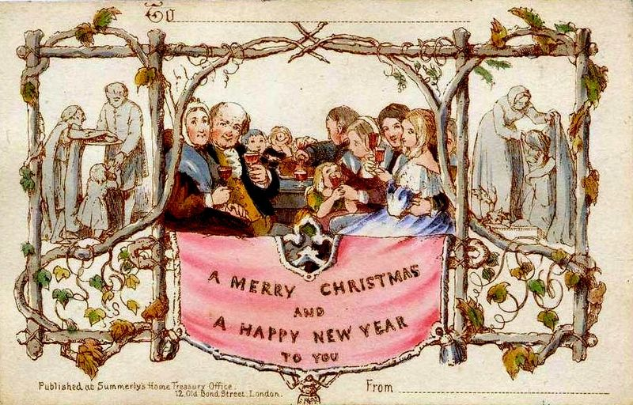

< Повернутися до вибору країни
Англія
В Англії до дітей приходить Санта Клаус. Для тих, хто гарно вчився, у нього завжди знайдуться подарунки.
Саме в Англії виникла традиція обмінюватися вітальними листівками до нового року до Нового року. Перша новорічна листівка була надрукована в Лондоні в 1843 році.

У новорічні дні в театрах Англії для дітей показують вистави за сюжжетами старовинних аінглійських казок.